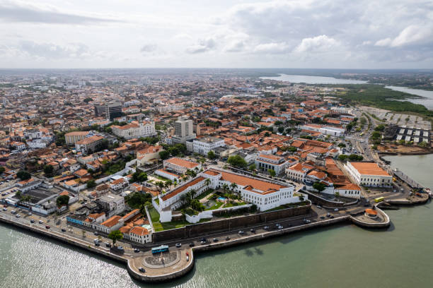

O Maranhão é um estado localizado na região Nordeste do Brasil, conhecido por sua rica cultura, história e belezas naturais. Sua capital é São Luís, uma cidade com forte influência colonial e patrimônio cultural. O Maranhão destaca-se pelas suas praias paradisíacas, como as de Lençóis Maranhenses, famoso por suas dunas e lagoas de água cristalina, e também pelo Delta do Parnaíba, um dos maiores deltas das Américas. A economia do estado é baseada na agricultura, pesca, turismo e indústria. Além disso, o Maranhão possui uma cultura vibrante, com manifestações como o bumba-meu-boi, festas tradicionais e uma culinária deliciosa. É um lugar que combina natureza exuberante com uma história rica e cultura autêntica!

Voltar